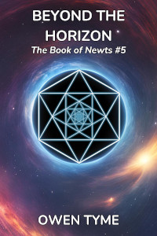

The Book of Newts
 The Book of
Newts is a remarkable volume. Paradoxically, while The Book is
exceptionally magical, the information contained within is largely not.
It details every wonder of engineering, science and astronomy that’s
been discovered by its past owners, but this information is only visible
to those with a genetic talent for mathematics. To all others, it
appears to be a thick volume describing every variation of newt that has
ever existed, in meticulous detail, complete with hand-drawn
illustrations.
The Book of
Newts is a remarkable volume. Paradoxically, while The Book is
exceptionally magical, the information contained within is largely not.
It details every wonder of engineering, science and astronomy that’s
been discovered by its past owners, but this information is only visible
to those with a genetic talent for mathematics. To all others, it
appears to be a thick volume describing every variation of newt that has
ever existed, in meticulous detail, complete with hand-drawn
illustrations.
The Book yearns for new knowledge. To that end, it inspires those that own it to ever greater heights, taking them to the stars and beyond, to reach their greatest potential, but nothing in life comes without a price and its owners rarely foresee the balance coming due.
While The Book is sometimes willing to wait, it’s never satisfied and will always drive its owner to the next horizon, to the next discovery, that it might grow a little thicker under the weight of new knowledge.
Throughout history, The Book has been the driving factor behind many things, particularly the colonization of the stars and terraforming of many worlds, all to serve its insatiable hunger for more.
Witches and wizards are drawn to the magic of The Book, but woe betide any that choose to stand in the way of the inevitable march of progress, because The Book has a will of its own and a terrible power to subtly bend its owner’s mind, leaving them just as hungry for more knowledge.
At first, The Book seems like a blessing, but it might also be termed a curse. That’s because it always seems to draw unwanted attention, but never to itself, and its owners become magnets for trouble of all sorts. Accusations of witchcraft often follow them, because science beyond the wildest imaginings of the common man may as well be magic.
Release Plan
Currently, the plan is to release this series in a manner that resembles television, with episodes consisting of up to four chapters and seasons roughly ten episodes long. Each novel of the series will be analogous to a season of a show.
Each season will be initially free to read on Royal Road. When each season has been fully posted, it will be published both in Ebook and print editions. Eventually, the story will be stubbed (become a handful of sample chapters that drive visitors to stores) on Royal Road, but not until the series is complete.
None of the novels will be published as Ebooks on Amazon until the series has been stubbed, due to exclusivity requirements. The Ebooks will, however, be available in other online stores.
The first three seasons are done and the first chapter was published on Monday, January 6, 2025. The rest has been following a chapter at a time, every Monday, Wednesday and Friday.
Volume one, titled Starwitch, will be available to purchase on June 27, 2025, as both an Ebook and in print.
Starwitch


Volume one is Starwitch.
The series begins with Amelia Blackwell, a witch with little magic talent, but a keen mind, described by the previous owner of The Book as a prodigy. She accepts ownership of it with curiosity and a voracious desire to read all she can.
The Book soon gets Amelia and her two older sisters into all sorts of trouble, because the depth of knowledge Amelia demonstrates breeds jealousy, strife and accusations of witchcraft for all the wrong reasons.
Eventually, Amelia constructs a vessel she names Starwitch and the sisters flee the moon they once called home, to seek peace among the stars. Instead, they find even greater strife and a hostile pirate queen that consumes the souls of witches to extend her own life.
Volume one, titled Starwitch, will be available to purchase on June 27, 2025, as both an Ebook and in print.
Here’s an audio sample of this novel:
Legacy of Newts

Volume two, Legacy of Newts,
deals with the consequences of events from volume one.
Having defeated the pirate queen to rescue her sisters from serving as fuel for that ancient witch’s life, Amelia flees, but the undead witch is furious beyond measure and gives chase, determined to run them down. Even better, the sisters stole her spell-core, leaving the giant, granite ship dead in space.
Unfortunately, that only buys them a little time and the Dead Queen soon has her ship moving again, to chase after them.
Marta is in bad shape, her soul still linked to that of the Queen, while Iris grows ever closer to death, due to the magic used to interrogate her.
The sisters seek assistance from everyone they’ve befriended at every port along the way, while Amelia plots to gather an armada at the end of the road.
The pirates are soon up in arms, because the Dead Queen’s lieutenants smell blood in the water. Things are poised to go from bad to worse, because sometimes the devil you know is better than the one waiting to fill the power vacuum…
The Next Horizon

Volume three is The Next
Horizon. It provides greater detail on The Book and the way it
interacts with Amelia.
The two of them come into direct conflict as Amelia decides to go back to her home world, to reconnect with the man she loves, while The Book insists on exploring space. As a result, The Book takes back the gifts it’s given and Amelia loses the ability to perform vast swaths of advanced mathematics.
Without that, she can’t plot a direct course through space and she’s forced to rely on the navigation tables of the Ice Palaces, a grueling, nine month journey home, rather than a quick few days. With such a long delay, Amelia is practically assured her man will have moved on.
Meanwhile, an old enemy from her home world, Lieutenant Colonel Denholm, launches herself into space with only one thought on her mind: revenge on Amelia for betraying king and country.
Worse, Denholm is met in orbit by the pirate Captain, Edwina “Roaring” Rowley, who’s also taken umbrage with Amelia over a matter of a broken promise.
With conflict looming at every turn, will Amelia get home safely and find her man, or will everything she cares about be taken from her?
Witchhome

In volume four, titled Witchhome, Amelia will arrive at a compromise with The Book they can both live with.
Amelia builds a magic, flying city to serve as a home and place of refuge while she explores space, a compromise between her desire to put down roots and the ceaseless need of The Book to go further.
Her massive construction project soon draws attention from all over the system. Witches and wizards flock to her cause, drawn like moths to a flame by the potential. Dwarves first supply the resources required, but soon see the allure of the project and lend a helping hand, that they might find the same kind of refuge from prejudice.
Unfortunately, it isn’t all good news, and the locals of Amelia’s home moon soon rise up, to burn the “cursed city of witches” to the ground. To avoid all-out war, Amelia’s people are forced to launch early, before even basic safety measures can be tested.
Will Amelia manage to have her cake and eat it too, or will all the troubles she seeks to escape finally catch up to her? Will her people be able to finish their work along the way, or will Witchhome come apart before they can reach assistance?
Beyond the Horizon
 In volume five, Beyond the Horizon, Amelia will finally begin exploring, as the means to find a place her people can call home.
Amelia flies her magic city full of brave witches, wizards and dwarves to unexplored space, for the sake of establishing a colony where they won’t be persecuted for their magical talents.
They carry with them seeds and animals of every kind, with which to make a new home, plus a population composed of every walk of life, including every skill that might be required both along the way and at their destination.
The journey is perilous beyond measure, with strange encounters aplenty, including lethal space weather, aliens with unfathomable motives and a hazardous encounter with a black hole.
Will Amelia’s people be able to find a world suitable for terraforming and the construction of a new home, or will their journey end with disaster, for over-reaching their grasp? Will Amelia be able to resist naming that planet Witchworld?